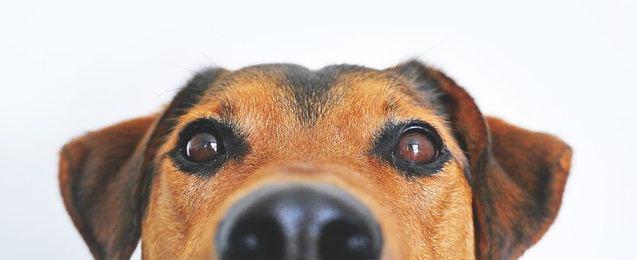
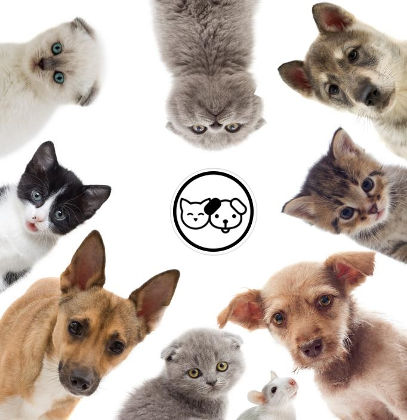

NUESTROS SERVICIOS
- PELUQUERIA
- VACUNACIÓN
- CUIDADOS PERSONALZADOS
- TRASLADOS

PREGUNTAS FRECUENTES
En THE PET contamos un patio grande, dentro de los cuales los perros pasan el día al
aire libre, corriendo, socializando y compartiendo con otros perros. Tenemos zonas de sombra y agua a
disposición todo el tiempo. Cada perro decide dónde y cómo pasar su día!
La comida es un momento indispensable del día. Cada perro tiene su propio alimento y aquí no se le
dará comida de otro perro. Es normal que algunos perros dejen de comer durante su estadía, por
lo cual es importante ser muy claro antes de dejarlo con nosotros. Sin embargo, también es cierto que
gracias a la actividad física que tienen durante el día y la presión que genera ver a otros perros
comer, la mayoría no tienen ningún inconveniente.
En THE PET no damos comida humana a nuestro huéspedes, por lo cual, no recibimos frutas, pollo,pan, carne u otros alimentos que consuma normalmente en casa. Solamente alimento y medicamentos cuando son necesarios.
Cada perro debe traer su propio alimento, para mantener el tipo de dieta y evitar inconvenientes gastrointestinales. En todo caso, proveemos el servicio de venta de alimento también, así que puedes adquirirlo a través nuestro durante la estadía de tu mascota.
En THE PET no damos comida humana a nuestro huéspedes, por lo cual, no recibimos frutas, pollo,pan, carne u otros alimentos que consuma normalmente en casa. Solamente alimento y medicamentos cuando son necesarios.
Cada perro debe traer su propio alimento, para mantener el tipo de dieta y evitar inconvenientes gastrointestinales. En todo caso, proveemos el servicio de venta de alimento también, así que puedes adquirirlo a través nuestro durante la estadía de tu mascota.
Nuestros huéspedes duermen en un espacio que fue especialmente diseñado para ellos. Cada mascota duerme
en un espacio independiente acorde a su tamaño, lo cual le permitirá estar seguro y protegido durante la
noche. Si quieres enviar su cama o cobija puedes hacerlo, para que se sienta como en su casa.
Ningún perro duerme afuera, por seguridad de él y de las demás mascotas.
Ningún perro duerme afuera, por seguridad de él y de las demás mascotas.
En THE PET ofrecemos el servicio de transporte puerta a puerta, siempre y cuando tu
mascota esté dentro de la zona que podemos cubrir con nuestra ruta.
Nosotros somos muy cuidadosos con los perros que recibimos, solo podemos recibir aquellos animales que
socialicen adecuadamente. Previamente se hará evaluación del comportamiento canino, que va definir si
recibimos o no al perro.
Para nosotros la socialización no va asociada al tamaño, la raza o la edad. Todos los perros deben hacer
parte de un mismo grupo, manteniendo armonía y equilibrio entre ellos. Para nosotros hacen parte de una
misma especie, antes que cualquier otra cosa.
Así mismo pasa con los cachorros y los perros adultos. Son los perros adultos los que apoyarán el proceso de socialización de los cachorros, enseñando el lenguaje canino y las reglas de comportamiento.
¡Aquí todos son bienvenidos!
Así mismo pasa con los cachorros y los perros adultos. Son los perros adultos los que apoyarán el proceso de socialización de los cachorros, enseñando el lenguaje canino y las reglas de comportamiento.
¡Aquí todos son bienvenidos!
Si tienes una hembra y esta próxima al celo, lo mejor sería que no asistiera a
una guardería. El olor del celo es tan fuerte que puede ocasionar alteración en el comportamiento de los
machos que estén hospedados también. De igual manera, tendría que estar aislada del grupo, para evitar
cualquier monta no deseada. ¡Consulta siempre antes de reservar el cupo!
En THE PET prestamos el servicio de peluquería, que tiene un costo adicional, en donde
se le brinda a tu mascota un aseo completo.
Claro que sí! Los perros a veces extrañan sentirse en casa, y les gusta encontrar su cama o cobija
preferida. Lo que sí recomendamos es que sean cobijas y camas con forros lavables, para que al regreso a
casa las puedan lavar y vuelvan a quedar limpias.
Siempre y cuando tu veterinario considere apropiado enviar a tu perro a una guardería, en THE PET lo podemos recibir. Es importante que nos indiques qué tipo de cuidados debe tener: por ejemplo, si toma de medicamentos, en qué horarios, etc., o si tiene una enfermedad especial que requiera supervisión.
Así mismo, si tu perro sufre de algún miedo en particular (por ejemplo, a la pólvora), también nos debes avisar para tenerlo muy presente.
En cualquier caso, todos los perros deben estar en un estado adecuado de salud, tener sus vacunas completas, incluyendo la vacuna contra Tos de Perrera, tener antipulgas y haber sido desparasitados al menos en el último mes.
Nuestro mayor compromiso es la felicidad de los perros, así que haremos todo lo que esté en nuestras manos para que su estadía en THE PET sea la mejor!
Si tienes dudas o quieres reservar el cupo para tu mascota, puedes contactarnos aquí
Así mismo, si tu perro sufre de algún miedo en particular (por ejemplo, a la pólvora), también nos debes avisar para tenerlo muy presente.
En cualquier caso, todos los perros deben estar en un estado adecuado de salud, tener sus vacunas completas, incluyendo la vacuna contra Tos de Perrera, tener antipulgas y haber sido desparasitados al menos en el último mes.
Nuestro mayor compromiso es la felicidad de los perros, así que haremos todo lo que esté en nuestras manos para que su estadía en THE PET sea la mejor!
Si tienes dudas o quieres reservar el cupo para tu mascota, puedes contactarnos aquí